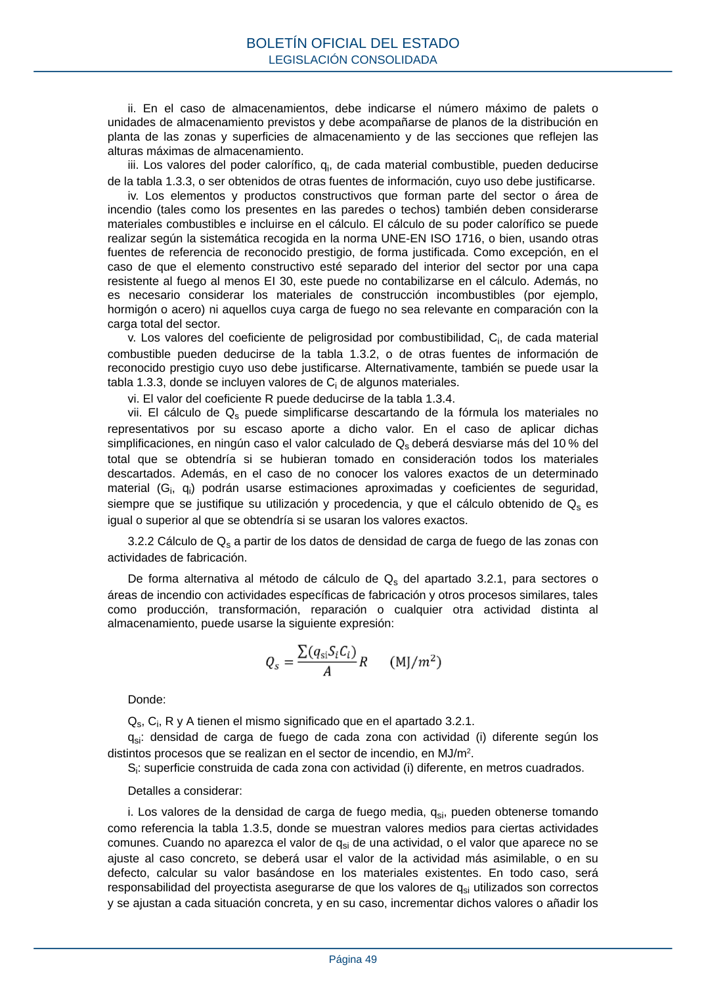

RSCIEI · edición 2025-04-10 · capa asociada
Documento RSCIEI-asociada · SHA-256 del PDF 85aa0af25d51e5b58d8975a4eefbf76d3f57a8933445cfe814ae9c4818a2e3e7
Página física 49 de 108.
Copia fiel del PDF fuente · Fuente oficial
Ficha de la disposición en la fuente oficial
Texto extraído y reorganizado: Basado en datos de la Agencia Estatal Boletín Oficial del Estado. PDF reproducido: Fuente de los datos: Agencia Estatal Boletín Oficial del Estado.
Formato: Texto de la página (Markdown)
ii. En el caso de almacenamientos, debe indicarse el número máximo de palets o unidades de almacenamiento previstos y debe acompañarse de planos de la distribución en planta de las zonas y superficies de almacenamiento y de las secciones que reflejen las alturas máximas de almacenamiento. iii. Los valores del poder calorífico, qi, de cada material combustible, pueden deducirse de la tabla 1.3.3, o ser obtenidos de otras fuentes de información, cuyo uso debe justificarse. iv. Los elementos y productos constructivos que forman parte del sector o área de incendio (tales como los presentes en las paredes o techos) también deben considerarse materiales combustibles e incluirse en el cálculo. El cálculo de su poder calorífico se puede realizar según la sistemática recogida en la norma UNE-EN ISO 1716, o bien, usando otras fuentes de referencia de reconocido prestigio, de forma justificada. Como excepción, en el caso de que el elemento constructivo esté separado del interior del sector por una capa resistente al fuego al menos EI 30, este puede no contabilizarse en el cálculo. Además, no es necesario considerar los materiales de construcción incombustibles (por ejemplo, hormigón o acero) ni aquellos cuya carga de fuego no sea relevante en comparación con la carga total del sector. v. Los valores del coeficiente de peligrosidad por combustibilidad, Ci, de cada material combustible pueden deducirse de la tabla 1.3.2, o de otras fuentes de información de reconocido prestigio cuyo uso debe justificarse. Alternativamente, también se puede usar la tabla 1.3.3, donde se incluyen valores de Ci de algunos materiales. vi. El valor del coeficiente R puede deducirse de la tabla 1.3.4. vii. El cálculo de Qs puede simplificarse descartando de la fórmula los materiales no representativos por su escaso aporte a dicho valor. En el caso de aplicar dichas simplificaciones, en ningún caso el valor calculado de Qs deberá desviarse más del 10 % del total que se obtendría si se hubieran tomado en consideración todos los materiales descartados. Además, en el caso de no conocer los valores exactos de un determinado material (Gi, qi) podrán usarse estimaciones aproximadas y coeficientes de seguridad, siempre que se justifique su utilización y procedencia, y que el cálculo obtenido de Qs es igual o superior al que se obtendría si se usaran los valores exactos. 3.2.2 Cálculo de Qs a partir de los datos de densidad de carga de fuego de las zonas con actividades de fabricación. De forma alternativa al método de cálculo de Qs del apartado 3.2.1, para sectores o áreas de incendio con actividades específicas de fabricación y otros procesos similares, tales como producción, transformación, reparación o cualquier otra actividad distinta al almacenamiento, puede usarse la siguiente expresión: Donde: Qs, Ci, R y A tienen el mismo significado que en el apartado 3.2.1. qsi: densidad de carga de fuego de cada zona con actividad (i) diferente según los distintos procesos que se realizan en el sector de incendio, en MJ/m2. Si: superficie construida de cada zona con actividad (i) diferente, en metros cuadrados. Detalles a considerar: i. Los valores de la densidad de carga de fuego media, qsi, pueden obtenerse tomando como referencia la tabla 1.3.5, donde se muestran valores medios para ciertas actividades comunes. Cuando no aparezca el valor de qsi de una actividad, o el valor que aparece no se ajuste al caso concreto, se deberá usar el valor de la actividad más asimilable, o en su defecto, calcular su valor basándose en los materiales existentes. En todo caso, será responsabilidad del proyectista asegurarse de que los valores de qsi utilizados son correctos y se ajustan a cada situación concreta, y en su caso, incrementar dichos valores o añadir los BOLETÍN OFICIAL DEL ESTADO LEGISLACIÓN CONSOLIDADA Página 49
